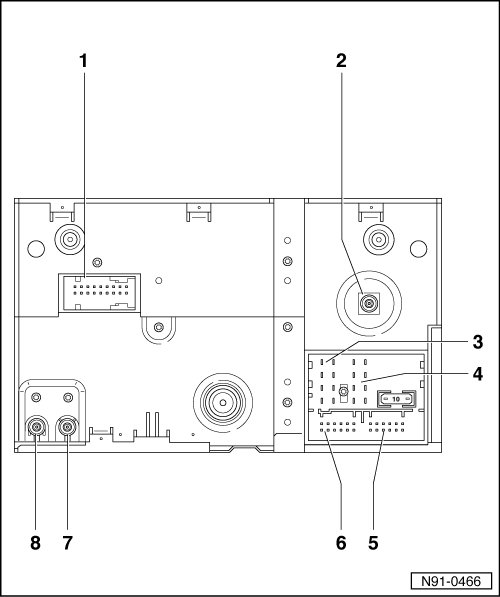
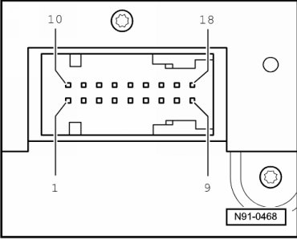
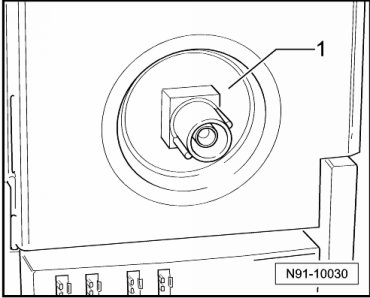
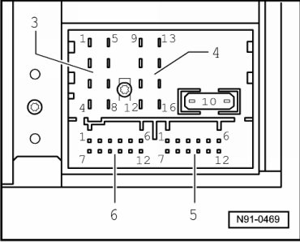

Connectors on Radio Navigation System Overview
Connectors on Radio Navigation System Overview

1 - Multiple connector 1, 18-pin
• Multi-pin connector assignments, refer to --> [ 18-Pin Connector 1, Video and LF Input ].
2 - Multi-pin harness connector 2
• Connection for navigation system antenna
• Multi-pin connector assignments, refer to --> [ Multi-pin harness connector 2 ].
3 - Multiple connector 3, 8-pin
• Multi-pin connector assignments, refer to --> [ 8-Pin Connector 3, Speaker Outputs ].
4 - Multiple connector 4, 8-pin
• Multi-pin connector assignments, refer to --> [ 8-Pin Connector 4, Voltage Supply Wires and CAN-Bus ].
5 - Multiple connector 5, 12-pin
• Multi-pin connector assignments, --> [ 12-Pin Connector 5, Telephone Signals and Pre-Amplifier Output Signals ].
6 - Multiple connector 6, 12-pin
• Multi-pin connector assignments, refer to --> [ 12-Pin Connector 6, CD Changer Control and Audio Input Signals ].
7 - Connector 7
• Antenna connection
• Multi-pin connector assignments, refer to --> [ Antenna Connectors 7 and 8 ].
8 - Connector 8
• Antenna connection
• Multi-pin connector assignments, refer to --> [ Antenna Connectors 7 and 8 ].
18-Pin Connector 1, Video and LF Input

1 not used
2 Audio signal Ground (GND)
3 Audio signal Ground (GND)
4 Shielding Ground (GND)
5 Video signal Ground (GND)
6 Video switching signal
7 Video signal Ground (GND)
8 Video signal Ground (GND)
9 Video signal Ground (GND)
10 not used
11 Audio signal, left
12 Audi signal, right
13 Shielding Ground (GND)
14 vertical and horizontal picture signals
15 50 Hertz/ 60 Hertz
16 Signal input for picture signal blue
17 Signal input for picture signal green
18 Signal input for picture signal red
Multi-pin harness connector 2

1 Purple connection for navigation antenna input signal from roof antenna
8-Pin Connector 3, Speaker Outputs

• If the radio unit is the vehicle is equipped with the "Sound 2" sound system, then these speaker outputs are used as input signals for the sound system amplifier.
1 Right rear speaker, positive
2 Right front speaker, positive
3 Left front speaker, positive
4 Left rear speaker, positive
5 Right rear speaker, negative
6 Right front speaker, negative
7 Left front speaker, negative
8 Left rear speaker, negative
8-Pin Connector 4, Voltage Supply Wires and CAN-Bus
9 CAN bus High
10 CAN bus Low
11 Radio muting (during telephone use)
12 Voltage supply, negative, terminal 31
13 Connector for ignition key-controlled switching on and off (S contact)
14 Alarm system terminal (optional)
15 Voltage supply, positive, terminal 30
16 Anti-theft system control signal, SAFE
12-Pin Connector 5, Telephone Signals and Pre-Amplifier Output Signals
1 External audio output, left
2 External audio input ground
3 Line Out, left
4 not used
5 Driving directions low frequency +
6 Telephone audio input signal TEL-
7 External audio input, right
8 Line Out, ground
9 Line Out, right
10 not used
11 Driving directions low frequency -
12 Telephone audio input signal TEL+
12-Pin Connector 6, CD Changer Control and Audio Input Signals
1 Headphone audio signal output, right, positive
2 CD changer, left and right port, Ground (GND)
3 Headphones audio signal output, ground
4 CD changer, voltage supply, positive, terminal 30
5 Headphone audio signal output, left, positive
6 CD changer, DATA OUT (data exchange for CD changer control from radio unit to CD changer)
7 not used
8 CD changer, left port, CD/L
9 CD changer, right port, CD/R
10 CD Changer, control signal
11 CD changer, DATA IN (data exchange for CD changer control from radio unit to CD changer)
12 CD changer, CLOCK (internal test protocol for monitoring data flow)
Antenna Connectors 7 and 8

1 Transparent color connection for antenna output signal FM from antenna selection control module
2 Brown connector for antenna output signal FM to antenna selection control module (diversity)
Antenna signal input via connection 1 is tested in radio and result is output via connection 2 to antenna selection control module. Function is switched to another antenna when antenna signal is determined to be weak (diversity). This procedure is not audible to the customer.